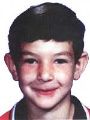

|
Defaced by the DHC
(nemesystm)
Admin, if you would like to know how I got in, please E-mail me at
auto45040@hushmail.com
or ICQ me at
#55155478
thanks.
http://dhcorp.cjb.net
no RDS or Frontpage was used in
this defacement
|
June 7, 2000
Sante Fe, New Mexico
ROBERT ROMERO

DESCRIPTION
Date of Birth: April 10, 1993
Place of Birth: Santa Fe, New Mexico
Sex: Male
Hair: Brown
Height: 4'5"
Eyes: Brown
Weight: 80 pounds
Race: White (Hispanic)
THE DETAILS
Robert Romero has been missing since June 7, 2000 from Sante Fe, New Mexico. He was last seen walking to a friend's home in the Bellemah area of Santa Fe.
REMARKS
Robert Romero was last seen wearing a white t-shirt, blue jeans, and black and white tennis shoes. He has freckles.
Individuals with information concerning this case should take no action themselves, but instead immediately contact the nearest FBI Office or local law enforcement agency. For any possible sighting outside the United States, contact the nearest United States Embassy or Consulate.
Forgetting.
I personally think forgetting things is good. Because what if we didn't forget a lot of things? I think it would really stink if we kept on remembering things we didn't want to remember, like some nasty accident we witnessed, or whatever, but sometimes, forgetting things is bad.
We've forgotten there's a war in Afghanistan, in the Congo, white farmers are being murdered almost daily in Zimbabwe, human rights are still not being enforced in China or Turkey, Kashmir isn't in the news that much anymore and Elian's problems aren't cared about anymore.
Everyone acted like it was oh so important a little while ago, and now because CNN doesn't broadcast it anymore we don't care anymore. Kind of sad isn't it? That we are just interested or care about or show compassion with people and things in the news.
Which raises a question: were we interested because it was in the news or because we really care?
IF we REALLY cared, why aren't we showing it anymore? The problems are still there aren't they? Why don't we do something for them then?
The Dalai Lama is still exiled from Nepal, a country of which most people don't even know where it is, or that it even exists. And nobody cares or does anything anymore. And we're not interested.
And you don't care about the Dalai Lama, and if you said you were interested and cared about human rights in China, the war in the Congo or the high level of crime in South-Africa, you're just a big fat liar, and you should have a look at yourself.
Are you part of a human rights movement? Probably not. You just send a check to organizations rich enough to afford a commercial. Do you actually help people? The homeless? The sick? The elderly? Give money, give your support to organizations that help in places where it's needed and nobody cares about? I doubt it, because it's not in the news, you forget, and you will be forgotten too.
nemesystm
ps: hi Xhostile, and a lot of clown lub to good ole'
AcidKlown. |